Amsterdam, area by area
Neighbourhoods
Every neighbourhood and quarter whose postcard you can collect on a ride: what the game has modelled there, the stories behind its canal and street names, and frames from the ride itself.
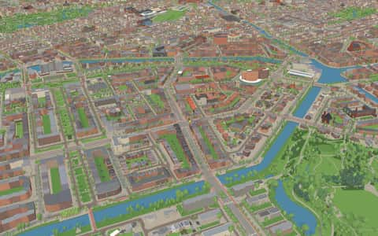
Apollobuurt
Quarter in Oud-Zuid · 5 models · 25 facts
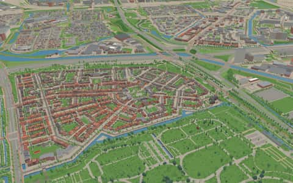
Betondorp
Neighbourhood · 6 facts
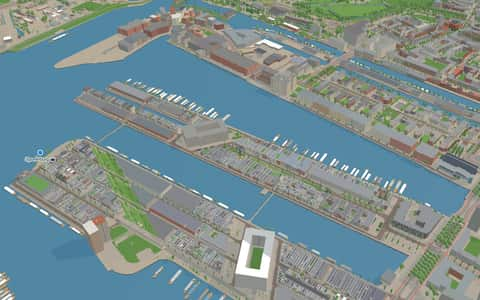
Borneo-eiland
Neighbourhood in Oostelijk Havengebied · 9 facts
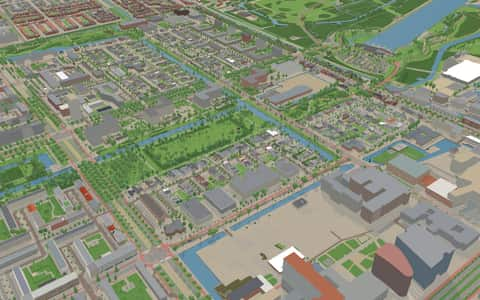
Buitenveldert
Quarter · 2 models · 49 facts
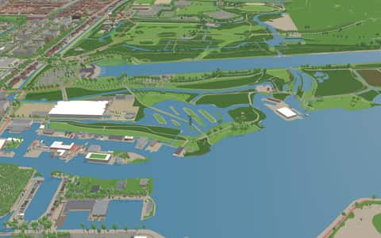
Buitenveldert-West
Quarter in Buitenveldert · 1 model · 32 facts
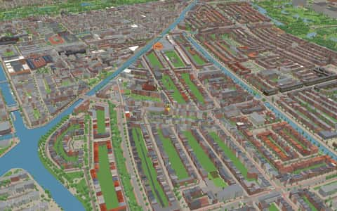
Chassébuurt
Neighbourhood in De Baarsjes · 3 models · 29 facts
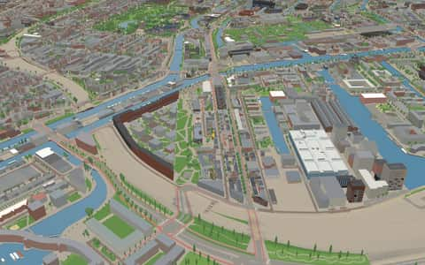
Czaar Peterbuurt
Neighbourhood in Oostelijke Eilanden · 1 model · 12 facts
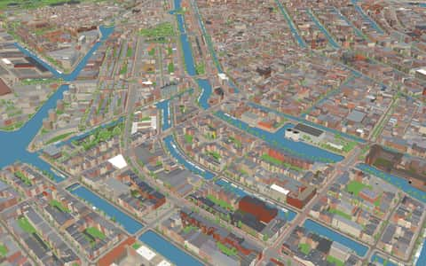
Da Costabuurt
Quarter · 16 models · 15 facts
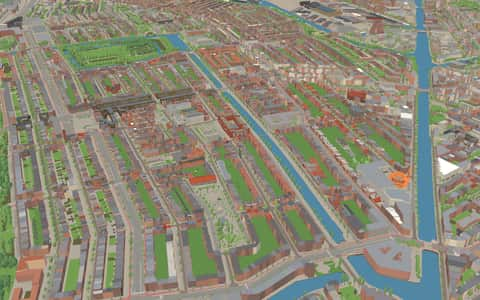
De Baarsjes
Quarter · 17 models · 31 facts
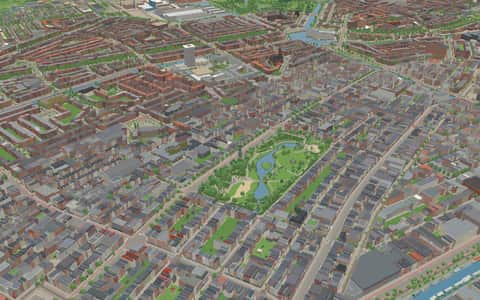
De Pijp
Quarter · 12 models · 38 facts
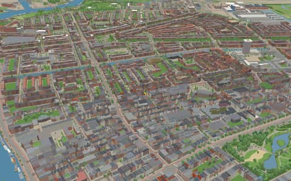
Diamantbuurt
Neighbourhood in De Pijp · 2 models · 11 facts
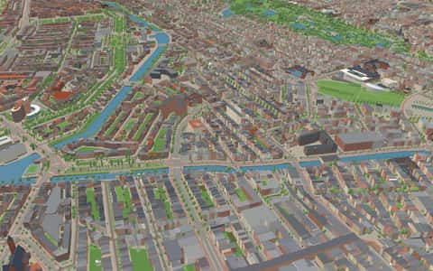
Duivelseiland
Neighbourhood in Museumkwartier · 1 model · 3 facts
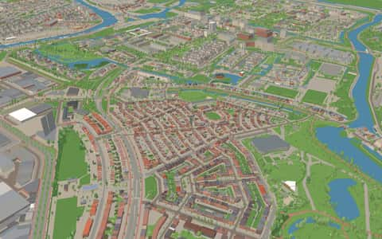
Floradorp
Neighbourhood · 6 facts
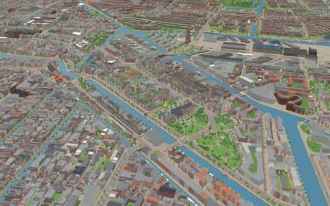
Frederik Hendrikbuurt
Quarter · 3 models · 27 facts
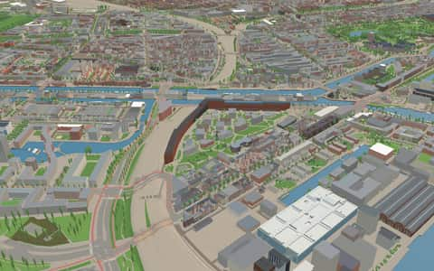
Funenpark
Neighbourhood in Oostelijke Eilanden · 1 model · 9 facts
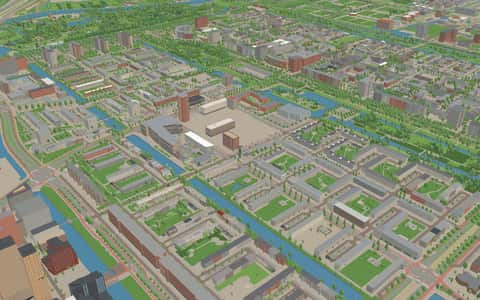
Gelderlandpleinbuurt
Neighbourhood in Buitenveldert-West · 13 facts
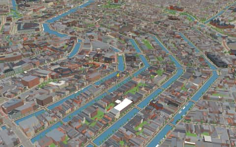
Grachtengordel
Quarter · 49 models · 151 facts
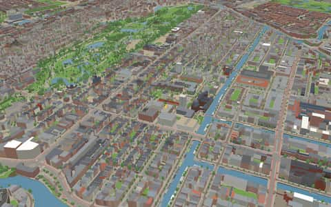
Helmersbuurt
Quarter · 2 models · 12 facts
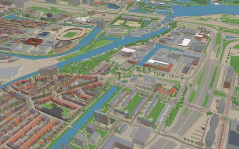
Hoofddorppleinbuurt
Quarter in Oud-Zuid · 18 facts
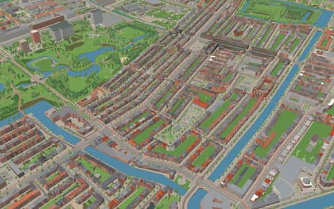
Hoofdweg e.o.
Neighbourhood in De Baarsjes · 8 models · 2 facts
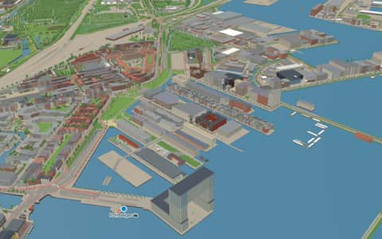
Houthaven
Quarter · 7 models · 8 facts
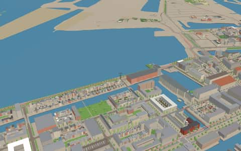
IJburg
Quarter · 1 model · 17 facts
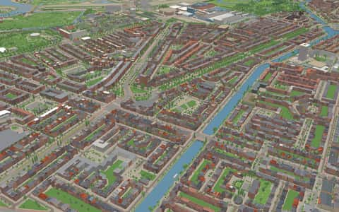
IJselbuurt
Quarter in Rivierenbuurt · 1 fact
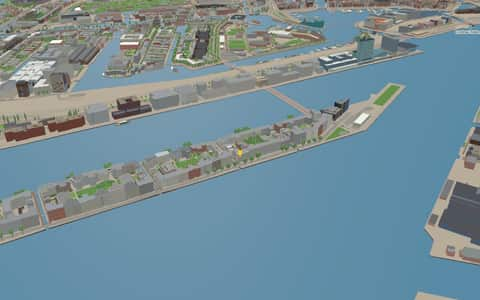
Java-eiland
Neighbourhood in Oostelijk Havengebied · 3 models · 20 facts
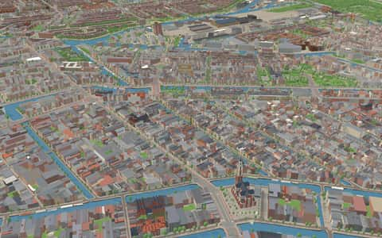
Jordaan
Quarter · 19 models · 96 facts
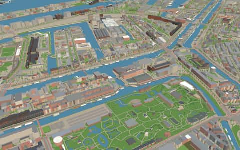
Kadijken
Neighbourhood · 2 models · 34 facts
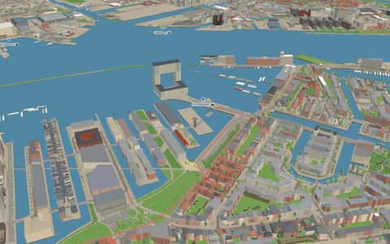
Karlskrona-eiland
Neighbourhood in Houthaven · 1 fact
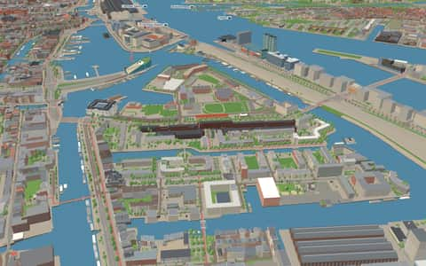
Kattenburg
Neighbourhood in Oostelijke Eilanden · 1 model · 24 facts
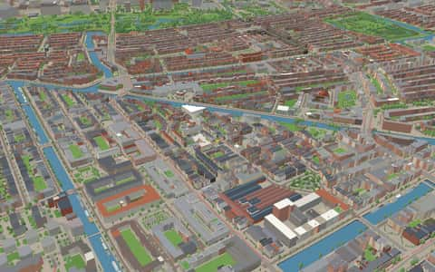
Kinkerbuurt
Quarter · 16 models · 22 facts
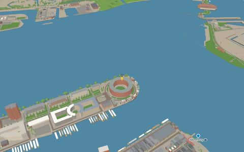
KNSM-eiland
Neighbourhood in Oostelijk Havengebied · 21 facts
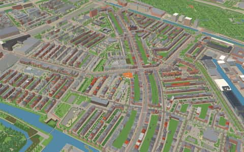
Landlust
Quarter · 7 models · 17 facts
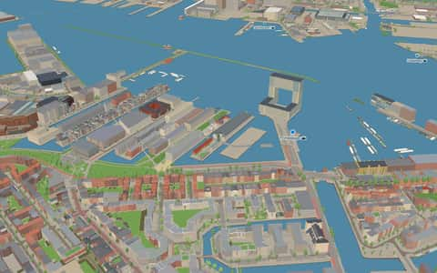
Libau-eiland
Neighbourhood in Houthaven · 1 fact
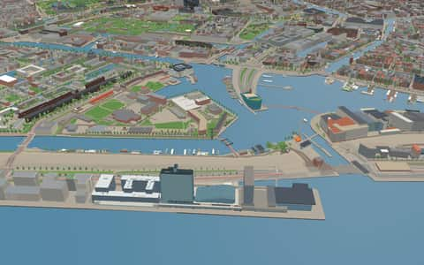
Marineterrein
Neighbourhood in Oostelijke Eilanden · 5 models · 40 facts
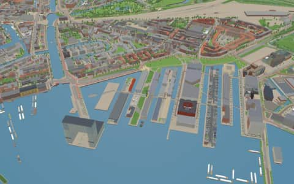
Memeleiland
Neighbourhood in Houthaven · 5 facts
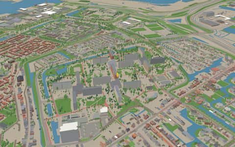
Molenwijkpark
Neighbourhood · 3 facts
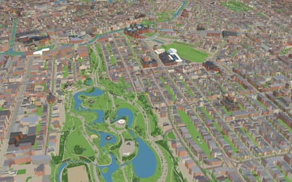
Museumkwartier
Quarter in Oud-Zuid · 26 models · 69 facts
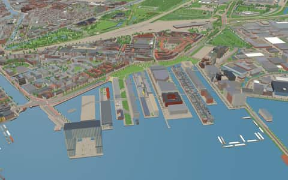
Narva-eiland
Neighbourhood in Houthaven · 1 fact
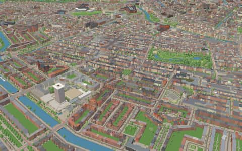
Nieuwe Pijp
Neighbourhood · 5 models · 16 facts
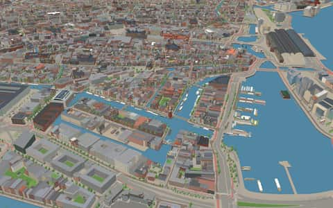
Nieuwmarkt/Lastage
Quarter · 34 models · 172 facts
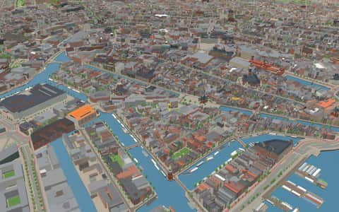
Nieuwmarktbuurt
Neighbourhood in Nieuwmarkt/Lastage · 3 models · 34 facts
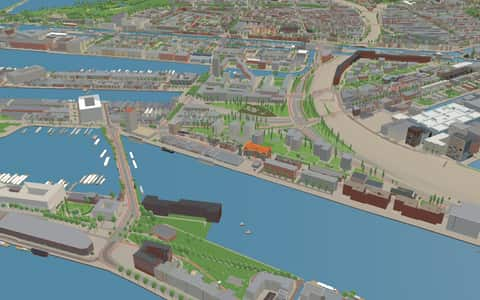
Oostelijk Havengebied
Quarter · 14 models · 69 facts
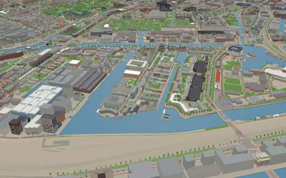
Oostelijke Eilanden
Quarter · 14 models · 67 facts
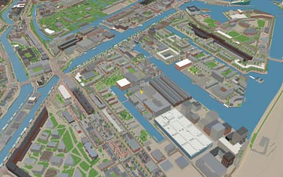
Oostenburg
Neighbourhood in Oostelijke Eilanden · 4 models · 15 facts
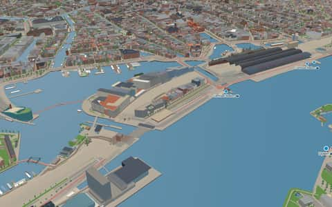
Oosterdokseiland
Neighbourhood in Nieuwmarkt/Lastage · 3 models · 26 facts
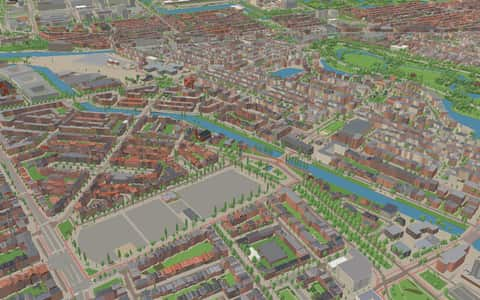
Oud-Zuid
Quarter · 40 models · 158 facts
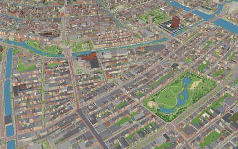
Oude Pijp
Neighbourhood in De Pijp · 5 models · 26 facts
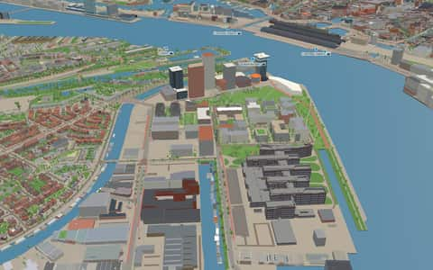
Overhoeks
Neighbourhood · 7 models · 13 facts
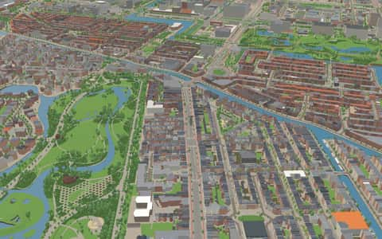
Overtoomse Sluis
Quarter · 1 model · 15 facts
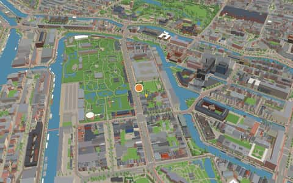
Plantage
Neighbourhood · 10 models · 50 facts
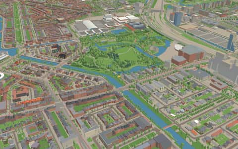
Prinses Irenebuurt e.o.
Quarter · 2 models · 30 facts
Rapenburg
Neighbourhood in Nieuwmarkt/Lastage · 5 models · 36 facts
Revaleiland
Neighbourhood in Houthaven · 1 model · 5 facts
Rijnbuurt
Quarter in Rivierenbuurt · 8 models · 7 facts
Rivierenbuurt
Quarter · 13 models · 17 facts
Scheldebuurt
Quarter · 5 models · 13 facts
Schinkelbuurt
Quarter in Oud-Zuid · 2 models · 37 facts
Slotervaart
Quarter · 506 kit buildings · 23 facts
Sluisbuurt
Neighbourhood · 4 facts
Spaarndammerbuurt
Quarter · 14 models · 14 facts
Sporenburg
Neighbourhood in Oostelijk Havengebied · 20 facts
Sportheldenbuurt
Neighbourhood · 1 model · 5 facts
Staatsliedenbuurt
Quarter · 15 models · 29 facts
Stadionbuurt
Quarter in Oud-Zuid · 3 models · 36 facts
Stettineiland
Neighbourhood in Houthaven · 1 fact
Tuindorp Nieuwendam
Neighbourhood · 1 model · 660 kit buildings · 5 facts
Uilenburg
Neighbourhood in Nieuwmarkt/Lastage · 3 models · 31 facts
Valkenburg
Neighbourhood in Nieuwmarkt/Lastage · 3 models · 8 facts
Van Galenbuurt
Neighbourhood in De Baarsjes · 6 models · 7 facts
Van Lennepbuurt
Quarter · 6 models · 22 facts
Vivaldi
Neighbourhood in Zuidas · 1 model · 14 facts
Vondelparkbuurt
Quarter · 7 models · 21 facts
VU-kwartier
Neighbourhood in Zuidas · 23 facts
Weesperbuurt
Neighbourhood · 14 models · 63 facts
Westindische Buurt
Neighbourhood in De Baarsjes
Wiborgeiland
Neighbourhood in Houthaven · 1 fact
Willemspark
Quarter in Oud-Zuid · 4 models · 8 facts
Wittenburg
Neighbourhood in Oostelijke Eilanden · 2 models · 27 facts
Zuidas
Quarter · 7 models · 59 facts
No neighbourhood matches.